What this is
SPHEREx scans the whole sky every six months in 102 near-infrared colours. Like Clyde Tombaugh blinking photographic plates, SphereBlink puts the visits of one small patch of sky in time order and plays them as a short animation, so a star that moves (or changes brightness) stands out against the fixed background.
Given a target name or RA/Dec, the tool: (1) asks NASA/IPAC IRSA's Simple Image Access service for every SPHEREx DR1 and QR3 image covering it; (2) downloads small cutouts of one detector band; (3) subtracts the zodiacal-light model, masks bad pixels from the FLAGS plane (but keeps saturated star cores visible), and reads the exact wavelength at the target from each image's wavelength map; (4) re-projects every visit onto one common sky grid; (5) measures the target's position and brightness in each visit and in median stacks of each survey pass; (6) makes the blink animations and plots below, with the catalog proper-motion prediction overlaid.
This page is a static snapshot of real results computed on 15 Nov 2026 from live IRSA data. The full tool (Python + Streamlit) queries the archive live for any RA/Dec. Anything that seems to move or change is a candidate, not a discovery.
Results on the five challenge test targets
| Target | Band | Visits | Measured shift (first→last epoch) | Predicted from catalog | Verdict |
|---|---|---|---|---|---|
| Barnard's Star | SPHEREx-D5 | 48 | 10.22" | 10.3" | Moves — clearly visible. |
| Epsilon Indi B | SPHEREx-D5 | 42 | 6.52" | 6.68" | Moves — visible, matches catalog. |
| WISE 0855 | SPHEREx-D6 | 45 | 8.39" | 7.97" | Faint; motion measured, hard to see by eye. (first epoch has only 3 frames and is unreliable; between the two reliable epochs: 3.3″ measured vs 3.6″ predicted) |
| RW Aurigae | SPHEREx-D1 | 48 | 0.21" | 0.02" | Does not move; candidate brightening. |
| R Draconis | SPHEREx-D1 | 48 | 0.54" | 0.02" | Does not move; too bright to measure brightness. |
Bands: D1 0.75–1.1 µm, D5 3.8–4.4 µm, D6 4.4–5.0 µm. One SPHEREx pixel = 6.15″. Shifts are from the median-stack centroids.
Barnard's Star SPHEREx-D5
Moves — clearly visible.
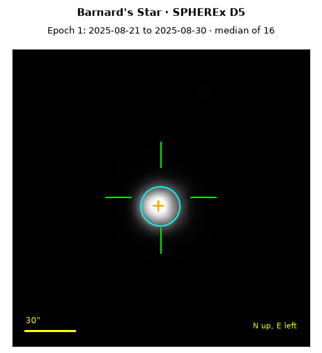
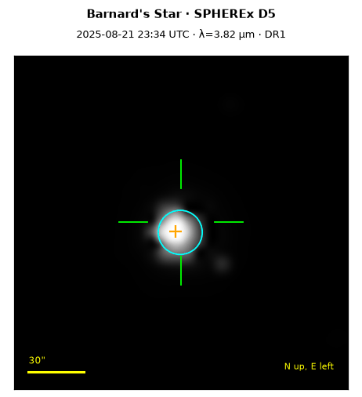
Barnard's Star visibly moves north between the three epoch stacks. Epoch 1 to epoch 3 shift: 10.22" in 0.99 yr; the Gaia catalog proper motion predicts 10.3". Fitted rate from the stacks: Dec 9.99 ± 0.42"/yr (catalog 10.362); RA -2.66 ± 0.56"/yr (catalog -0.802). The RA part is less accurate because the star is saturated in every SPHEREx frame, so its centroid jitters by about ±2" visit to visit. Saturation also means no brightness measurement.
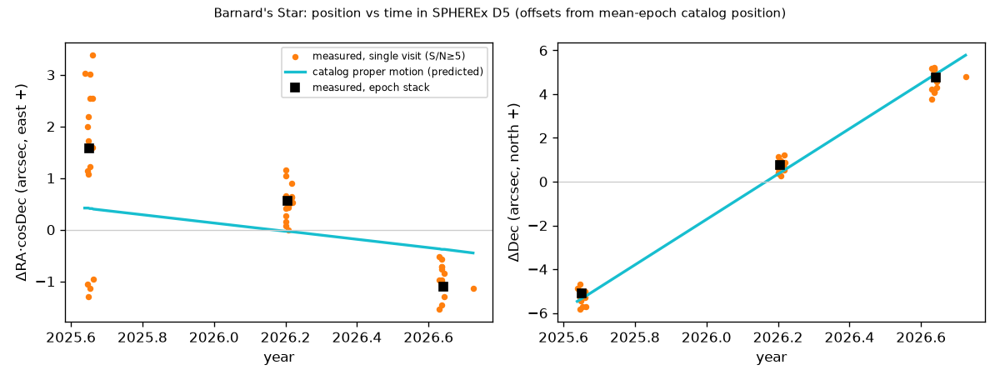
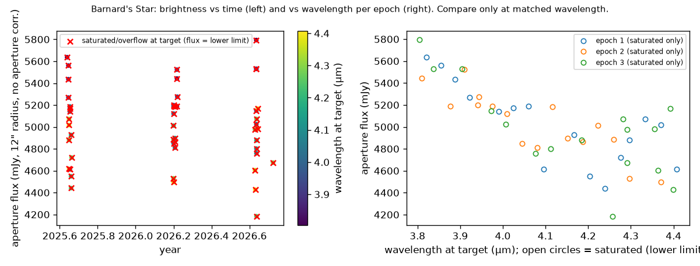
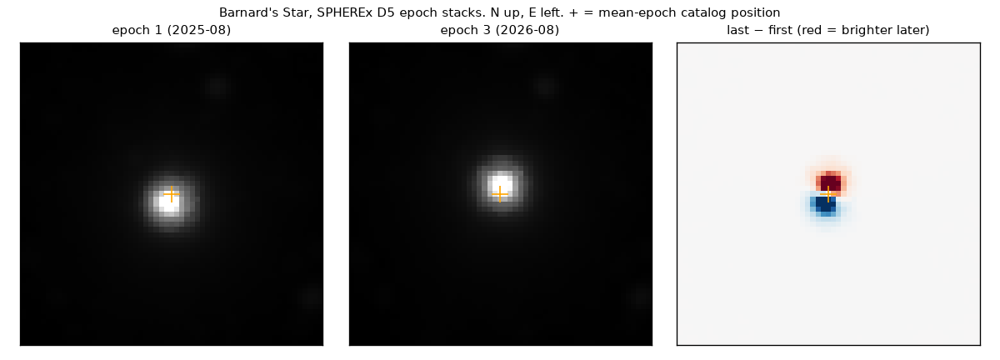
Epsilon Indi B SPHEREx-D5
Moves — visible, matches catalog.
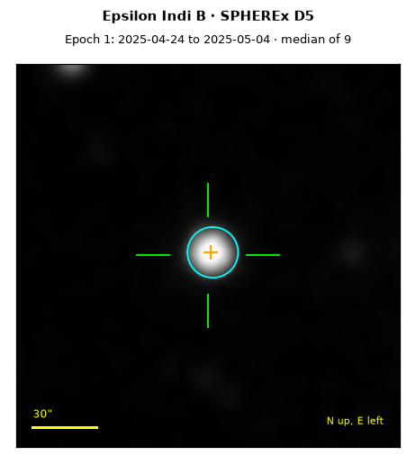
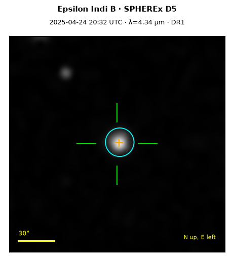
Epsilon Indi B (an unresolved pair of brown dwarfs) moves south-east. First to last epoch: 6.52" in 1.426 yr vs 6.68" predicted. Stack fit: RA 3.56 ± 0.31"/yr, Dec -2.84 ± 0.3"/yr (catalog 3.982, -2.467). Brightness at matched wavelength (3.8–4.4 µm) stays the same within about 5% between epochs (ratios 0.95–1.05), so no variability is claimed.
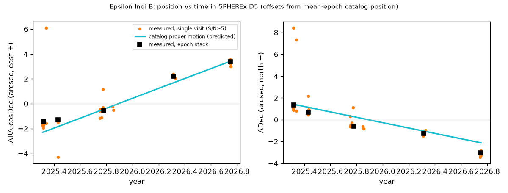
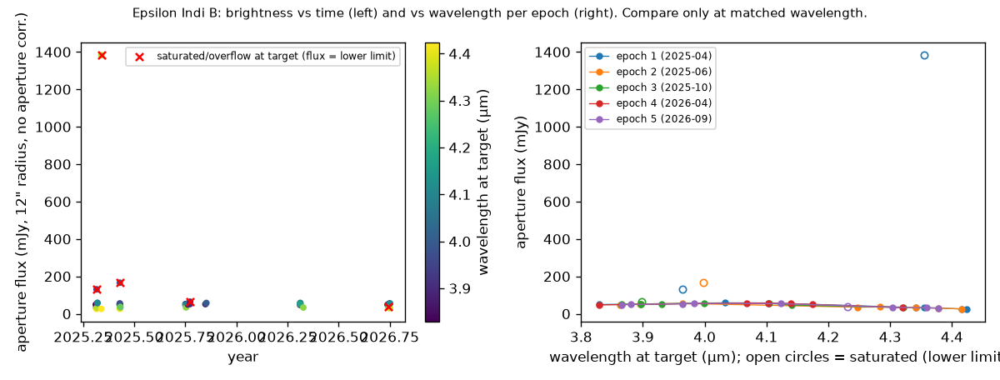
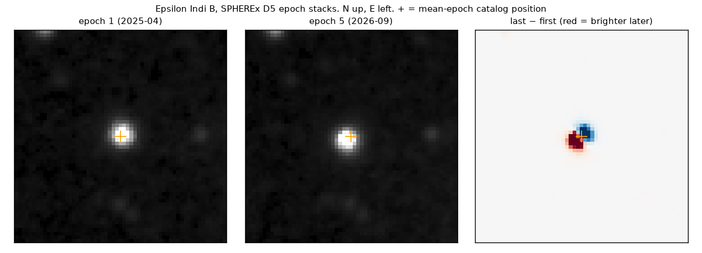
WISE 0855 SPHEREx-D6
Faint; motion measured, hard to see by eye.
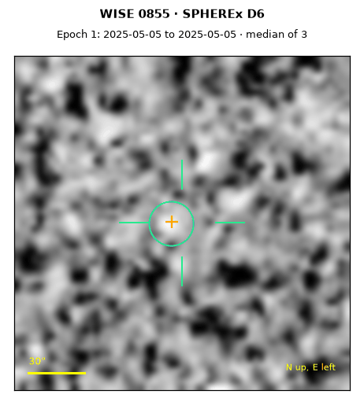
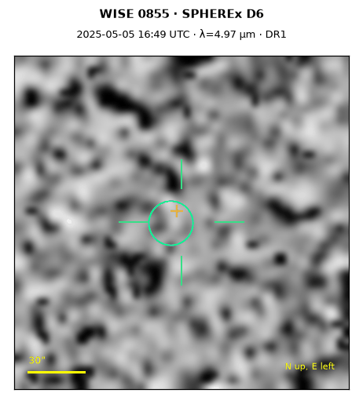
WISE 0855 is faint and only shows up at the longest wavelengths (4.4–5.0 µm, band D6). It is detected in the Nov–Dec 2025 and Apr–May 2026 stacks (S/N ≈ 30); the May 2025 stack has only 3 frames and is not a reliable detection. Between the two good epochs it shifts about 3.3" west vs 3.6" predicted — about half a SPHEREx pixel, so the blink alone does not make it obvious; the centroid measurement does. Stack fit RA -7.84 ± 1.0"/yr (catalog -8.124) leans on the weak first epoch. In band D5 the measurement disagrees more (6.1" vs 8.1" predicted), probably blending/low signal — treated as unreliable. Note: the challenge-page coordinates are an old (≈2010) position; by 2025–26 the object is ≈2.1′ west of it, so SphereBlink propagates the proper motion.
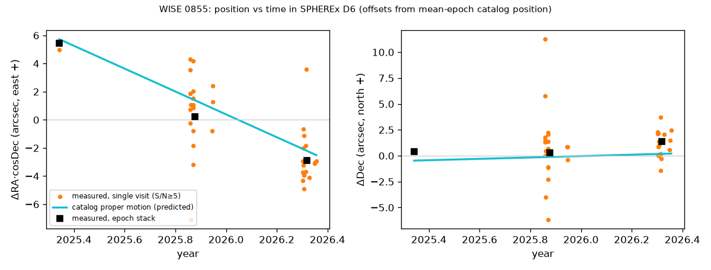
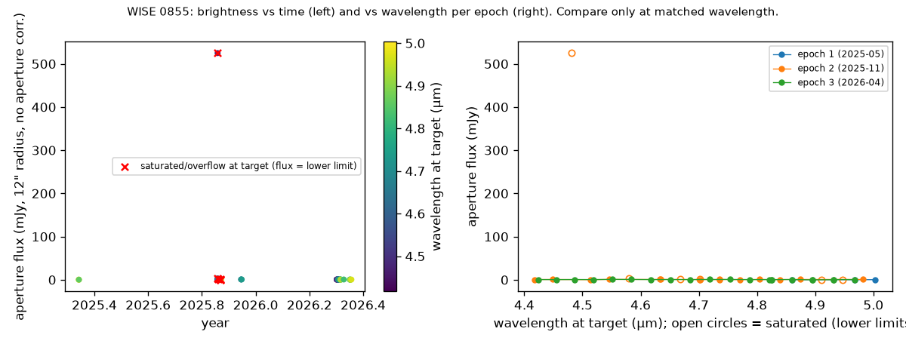
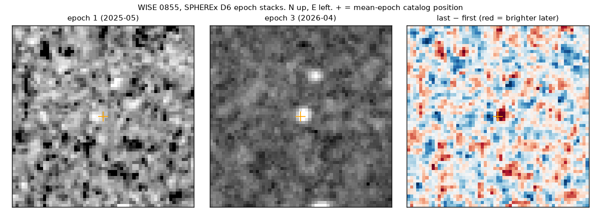
RW Aurigae SPHEREx-D1
Does not move; candidate brightening.
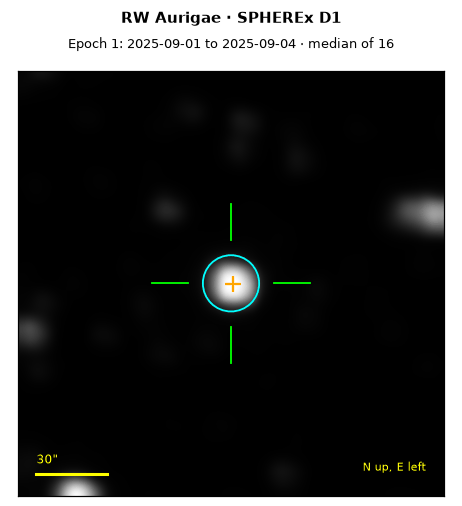
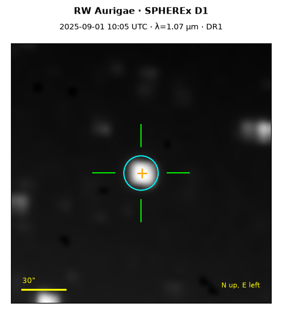
RW Aurigae stays put (0.21" first-to-last vs 0.02" expected; a nearby field star moved 0.39"), as a non-moving test should. Its core saturates in 32 of 48 frames. Using only unsaturated frames at matched wavelength (~0.74–0.78 µm) the aperture flux rose from ≈74–89 mJy (Sep 2025) to ≈116–125 mJy (Mar 2026) to ≈181–193 mJy (Sep 2026): a candidate ~2× brightening. Caveats: few matched pairs, ±20–30% scatter between neighbouring wavelengths, no aperture correction, A+B blended. RW Aur is a known strongly variable young star, but this is not a confirmed measurement.
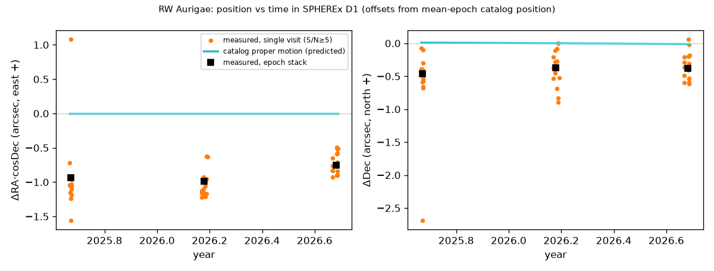
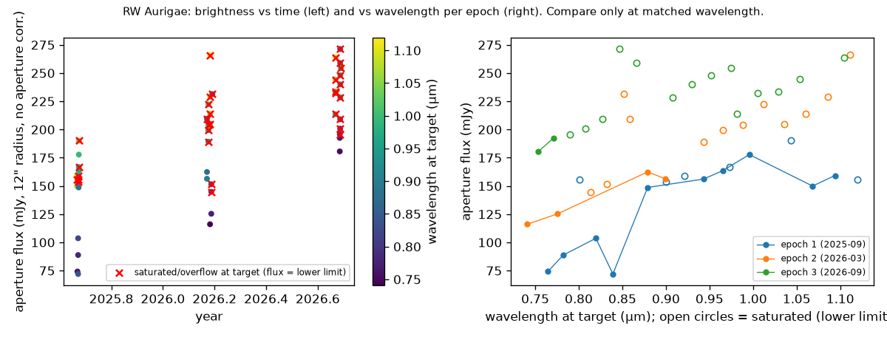
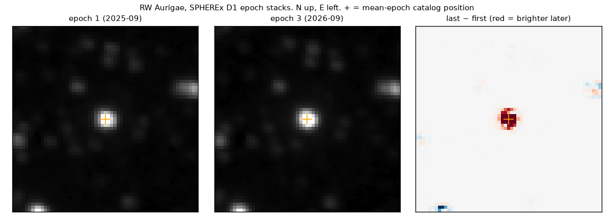
R Draconis SPHEREx-D1
Does not move; too bright to measure brightness.
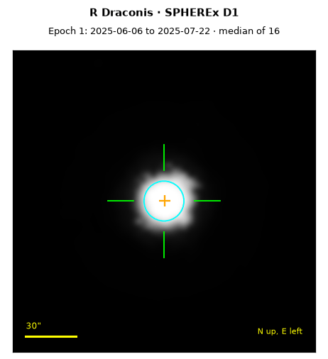
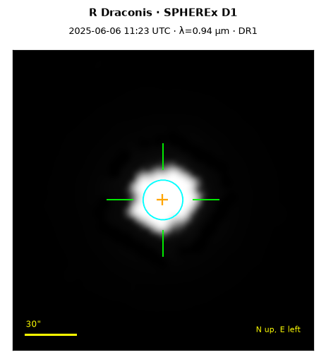
R Draconis does not move (0.54" first-to-last, within the noise). It is saturated in all six SPHEREx bands in every frame we checked, so this simple aperture photometry cannot measure its (known) Mira variability. That would need PSF-wing photometry — listed as future work.
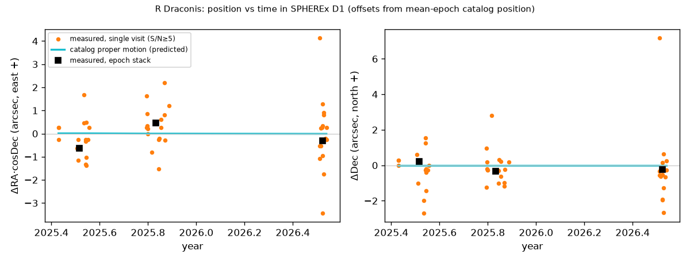
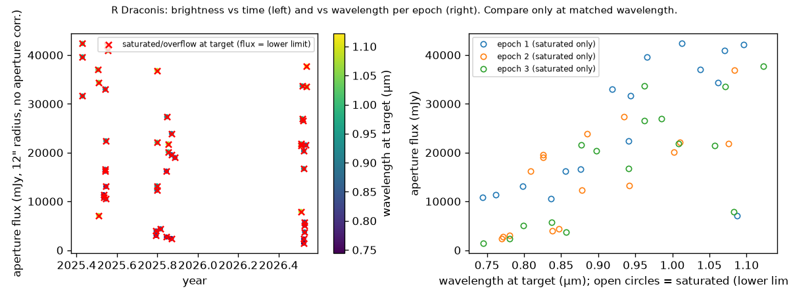
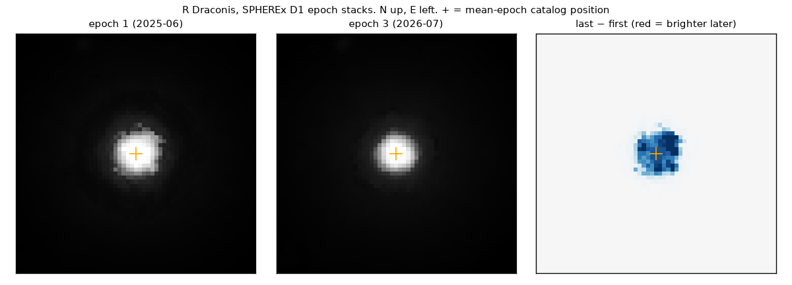
How to read the animations
- Green ticks mark a fixed point on the sky (the target's catalog position at the middle of the time span). A mover drifts relative to them.
- Cyan circle: where the catalog proper motion says the target should be on that date. Orange +: where SphereBlink measured it.
- Each SPHEREx detector has a linear variable filter, so every visit sees the target at a slightly different wavelength (shown in the label). Brightness is only compared at matched wavelength.
Limits (honest list)
- Bright stars (Barnard's Star, R Dra, most of RW Aur) saturate SPHEREx; their brightness cannot be measured by this simple method, and their centroids are noisier.
- Motions of a fraction of a pixel (WISE 0855 over 6 months) are measurable but hard to see by eye.
- Aperture fluxes are not aperture-corrected or colour-corrected; use them for relative changes only.
- SPHEREx data releases are still being added (DR1 + QR3 as of Nov 2026); results will change as more visits arrive.
Data, code and credits
Data: NASA SPHEREx Level-2 spectral images (collections spherex_dr1, spherex_qr3) from NASA/IPAC Infrared Science Archive (IRSA), via SIA2 and the cutout service. Target positions and proper motions: SIMBAD (Gaia EDR3; Kirkpatrick et al. 2021 for WISE 0855; van Leeuwen 2007 for RW Aur).
This publication makes use of data products from the Spectro-Photometer for the History of the Universe, Epoch of Reionization and Ices Explorer (SPHEREx), which is a joint project of the Jet Propulsion Laboratory and the California Institute of Technology, and is funded by the National Aeronautics and Space Administration.
Code: Python, numpy, scipy, astropy, matplotlib, Pillow, requests, Streamlit, ffmpeg. AI disclosure: an AI assistant helped write code and text; the team member directed, reviewed and tested the work. All numbers on this page come from the real outputs. Not an official NASA product.